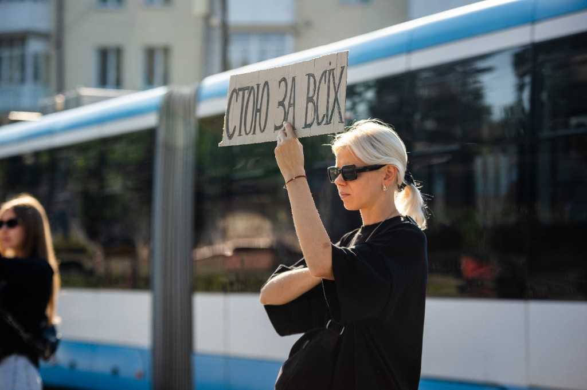

Співпраця.

«Вшануй» відкрита до різних форм співпраці — з людьми, громадами, волонтерами, організаціями, бізнесами та медіа. Для нас важливо, щоб памʼять про загиблих Захисників і Захисниць залишалася живою — не лише в датах і церемоніях, а й у щоденній культурі вдячності та взаємної турботи.
Стати волонтером

Проєкти «Вшануй» відбуваються в різних містах України, і часто для їх реалізації нам потрібні люди, готові допомогти на місці.
Волонтерство може бути різним: допомога під час подій і меморіальних практик, комунікація з громадами, організаційні завдання, фото й відео, робота з матеріалами, дослідження або інша професійна підтримка.
Не обовʼязково мати спеціальний досвід. Для нас важливі уважність до людей, повага до памʼяті загиблих та готовність відповідально робити свою частину роботи.
Якщо ви хочете долучитися до команди «Вшануй», залиште свої контакти у формі зворотного звʼязку — ми напишемо, коли зʼявиться проєкт або завдання, у якому ваша допомога буде потрібна.
Залишити контактиЯкщо серед запропонованих форматів ви не знайшли того, що відгукується саме вам, або маєте власну ідею, напишіть нам: